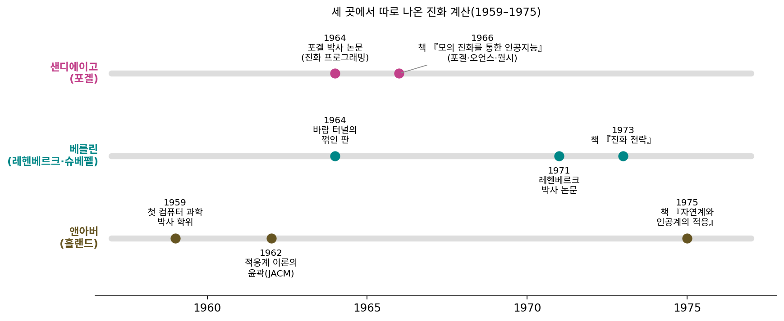
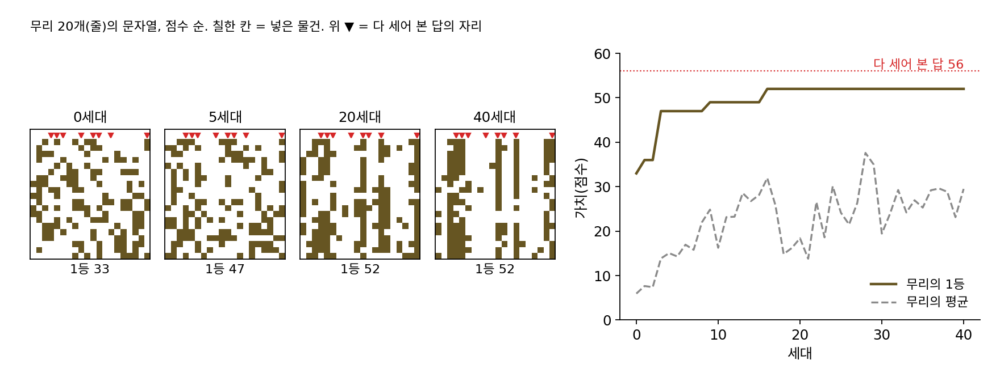
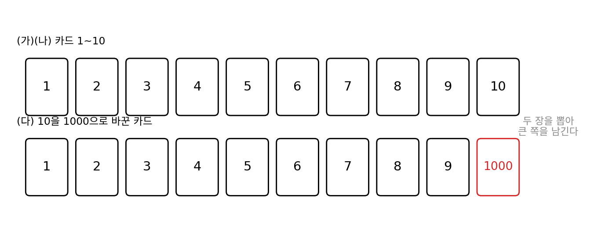
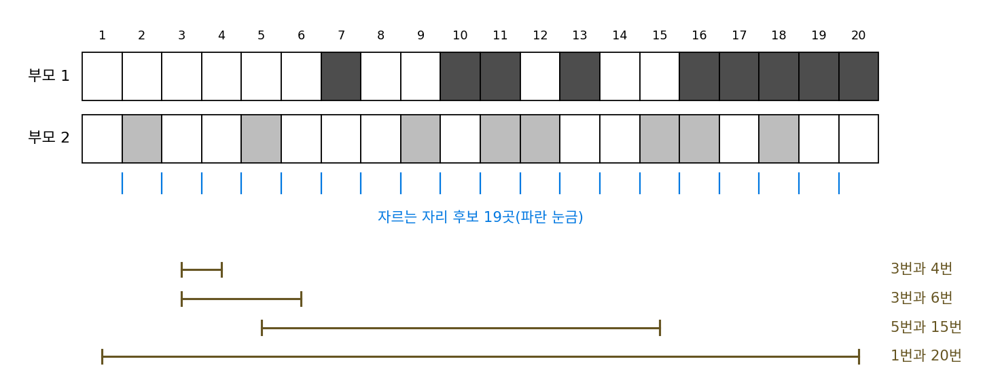
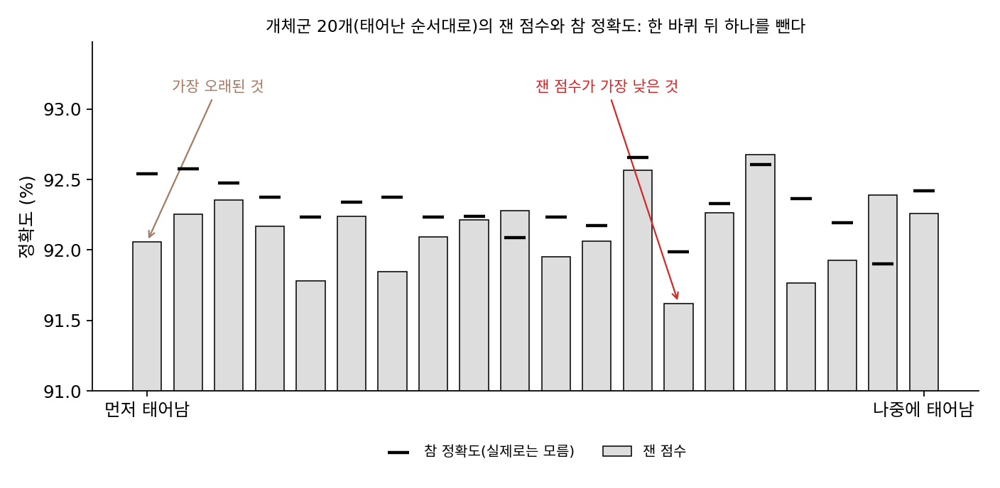

진화 알고리즘: 개체군으로 하는 탐색
이 장의 물음
미분 없이 내려가는 방법이 몇 가지 있었다. 좌표마다 조금씩 움직여 보고 함수 값의 차이를 재는 유한 차분은 파라미터가 d개면 그래디언트 하나에 함수 값을 적어도 d번 재야 했고, 잰 값에 노이즈가 끼면 두 함수 값의 차이가 노이즈에 묻혔다. 한 점에서 아무 방향으로나 한 발 내디뎌 보고 좋아지면 옮기는 무작위 탐색은 계산이 싸지만, 한 발을 얼마나 크게 내디딜지는 사람이 정해 주어야 했다.
이번에는 더 불편한 문제를 보자. 여행 가방에 물건 스무 개 가운데 무엇을 넣을지 고르는 일에는 「조금 움직인다」는 말 자체가 없어서, 물건 하나는 넣거나 빼거나 둘 중 하나다. 신경망의 층을 몇 개 쌓고 층마다 어떤 연산을 쓸지 고르는 일도 그렇다. 바람 부는 터널 안에서 판의 각도를 맞추는 일처럼 값은 연속이지만 한 번 재는 데 시간이 걸리고 잴 때마다 값이 조금씩 흔들리는 문제도 있다. 강화학습에서 한 판 게임을 끝까지 해 보고서야 점수 하나를 받는 경우도 마찬가지다.
이 장은 다음 물음에 차례로 답한다.
- 미분은커녕 「조금 움직이기」도 없는 선택의 문제에서, 여러 답을 한꺼번에 들고 다니면 무엇이 좋아질까?
- 한 점에서 무작위로 내딛는 스텝의 크기를, 사람이 정하지 않고 탐색이 스스로 맞추게 할 수 있을까?
- 골짜기가 길쭉하게 휘어 있으면 둥글게 뿌린 점들은 어떻게 될까? 뿌리는 모양을 골짜기에 맞추려면 무엇을 배워야 할까?
- 점을 뿌리는 분포 자체를 파라미터로 보고 그 분포를 그래디언트로 고칠 수 있을까? 그렇다면 그 그래디언트의 크기는 무엇을 기준으로 재야 할까?
유전 알고리즘: 고르고, 섞고, 조금 바꾸기
비행기 기내용 가방의 무게 한도가 7 kg이라 하자. 챙기고 싶은 물건이 스무 개이고 물건마다 무게와 「가져가면 좋은 정도」(가치)가 있다. 넣을지 말지를 물건마다 정하면 되니, 답 하나는 넣으면 1, 빼면 0인 스무 자리 문자열이다. 가짓수는 2²⁰ = 1,048,576개다. 이 정도는 컴퓨터로 다 세어 볼 수 있지만, 물건이 마흔 개면 1,099,511,627,776가지라 1초에 백만 개씩 세어도 12.7일이 걸리고, 백 개면 우주의 나이를 훌쩍 넘긴다. 물건 하나를 「0.3개만 넣는」 일은 없으니 미분할 수도 없다. 그렇다면 아무렇게나 많이 뽑아서 가장 좋은 것을 고르는 수밖에 없을까, 아니면 지금까지 뽑아 본 답들 가운데 좋았던 것에서 실마리를 얻을 수 있을까?
역사: 미시간, 샌디에이고, 베를린
1960년대 초, 거의 같은 무렵 세 곳에서 비슷한 생각이 나왔다. 생물이 세대를 거듭하며 환경에 맞춰 가는 과정을 계산의 규칙으로 옮겨 보자는 것이다. 미국 샌디에이고에서는 로런스 포겔(Lawrence Fogel)이 진화 프로그래밍을, 독일 베를린 공과대학에서는 학생들이 진화 전략을, 미국 미시간 대학교 앤아버에서는 존 홀랜드(John Holland)가 유전 알고리즘을 내놓았다(바이어·슈베펠, 2002의 정리).
홀랜드(1929–2015)는 1959년 미시간 대학교에서 그 학교의 첫 컴퓨터 과학 박사 학위를 받은 사람이다. 그는 최적의 답 하나를 찾는 기계보다, 환경이 주는 점수만 보고 스스로 나아지는 체계가 어떻게 움직이는지에 더 관심이 있었다. 1975년 책 『자연계와 인공계의 적응(Adaptation in Natural and Artificial Systems)』에서 그는 염색체처럼 생긴 문자열 개체군이 고르기, 섞기, 바꾸기를 되풀이하는 규칙을 그 이론의 수학적 모델로 내놓았다. 그가 특히 눈여겨본 것은 문자열 전체가 아니라 그 안의 작은 묶음이었다. 「셋째 자리와 넷째 자리가 둘 다 1」 같은 묶음이 점수를 올려 준다면, 그 묶음을 가진 문자열이 더 자주 부모로 뽑히고, 묶음이 짧을수록 섞이는 동안 쪼개지지 않고 자식에게 넘어간다. 좋은 답은 좋은 조각들이 모여서 생긴다는 이 설명을 흔히 스키마 정리라고 부른다.


고르고, 섞고, 조금 바꾸기면 코드 스무 줄이면 되겠는데요. 돌려 보고 아무렇게나 뽑기보다 나으면 그만이고요.

한 문제에서 돌려 보니 나았다고 해 봐요. 그럼 다른 문제에서도 나을 거라고 말할 수 있을까요?

음, 한 번 이긴 것만으로는 모르죠. 왜 나은지 설명이 있어야 다른 문제로 옮길 수 있을 것 같아요.

홀랜드가 붙든 게 그 설명이었어요. 생물이 세대를 거듭하며 환경에 맞춰 간다는 건 다들 보고 있었지만, 두 답의 조각을 이어 붙이는 일이 왜 계산에서도 통하는지에 답하는 수학은 홀랜드가 직접 세워야 했어요. 1975년 책이 규칙을 이론의 수학적 모델로 내놓은 것도 그래서고요.

그 학교에서 컴퓨터 과학 박사가 처음 나온 해가 1959년이면, 이 분야 자체가 막 시작된 때였네요.

그런데 짧은 묶음이 살아남는다는 설명이 맞는지는 어떻게 확인해요? 좋은 묶음이 뭔지부터 알아야 하잖아요.

그러려면 정답을 아는 문제가 있어야겠죠. 어떤 문제를 고르면 될까요?

다 세어 볼 수 있을 만큼 작은 문제요. 물건 스무 개짜리 가방이면 백만 가지라 정답을 알 수 있으니까, 거기서 정답의 조각이 개체군 안에 굳어 가는지 볼 수 있지 않을까요?
답 스무 개로 기내용 가방 싸기
규칙이 실제로 답을 찾아가는지 보려면 정답을 아는 문제가 필요해서, 가짓수가 백만 개쯤이라 다 세어 볼 수 있는 스무 개짜리 가방을 고른다. 물건의 무게는 0.3~2.5 kg, 가치는 1~9점이고(씨앗을 고정해 뽑은 이 책의 예), 다 세어 보면 가장 좋은 답은 물건 여덟 개를 넣은 가치 56점, 무게는 한도를 꽉 채운 7.0 kg이다. 가치 56점인 답은 백만 개 가운데 딱 하나다.
이 답을 모르는 척하고, 답 스무 개를 한꺼번에 들고 시작하자. 이 답 묶음을 개체군(population)이라 하고, 그 안의 답 하나하나를 개체, 개체군을 한 번 새로 만드는 일을 한 세대라 부른다. 처음 개체군은 물건마다 30% 확률로 넣어 아무렇게나 만들고, 점수(적합도)는 넣은 물건의 가치 합으로 매기되 무게가 한도를 넘으면 0점을 준다. 다음 세대는 세 가지 일로 만든다.
- 고르기: 개체군에서 둘을 아무렇게나 뽑아 점수가 높은 쪽을 부모로 삼는다. 이렇게 부모 둘을 고른다.
- 섞기: 문자열을 자를 자리를 하나 골라, 앞쪽은 부모 1에게서, 뒤쪽은 부모 2에게서 가져온다.
- 조금 바꾸기: 자식의 자리마다 1/20 확률로 0과 1을 뒤집는다.
첫 세대에서 만든 첫 자식을 따라가 보면 다음과 같은데, 자르는 자리는 여섯째 자리 뒤였다.
| 문자열 | 가치 | |
|---|---|---|
| 부모 1 | 010000·00100100110100 | 0 (무게 초과) |
| 부모 2 | 010001·00000010110100 | 22 |
| 섞은 자식 | 010000·00000010110100 | 15 |
| 8·11번 자리를 뒤집은 자식 | 01000001001010110100 | 0 (무게 초과) |
이 자식은 실패작이지만, 다음 세대를 고를 때 0점짜리는 둘씩 겨루기에서 거의 이기지 못하기 때문에 상관없다. 개체군에서 가장 점수가 높은 답 하나는 그대로 다음 세대에 넘겨 1등을 잃지 않게 했다. 개체 20개짜리 개체군으로 40세대를 돌리면 함수 값을 20 × 41 = 820번 잰다.
| 세대 | 개체군의 1등 가치 | 개체군의 평균 가치 |
|---|---|---|
| 0 | 33 | 5.95 |
| 1 | 36 | 7.65 |
| 5 | 47 | 14.30 |
| 10 | 49 | 16.25 |
| 20 | 52 | 18.40 |
| 40 | 52 | 29.50 |
이번 씨앗에서는 56점에 닿지 못하고 52점에 머물렀다. 씨앗을 스무 개 바꿔 돌리면 40세대 뒤 1등의 평균은 53.55점이고, 56점에 닿은 것은 스무 번 가운데 한 번이다. 같은 820번을 아무렇게나 뽑기만 하면 가장 좋은 답의 평균은 47.30점이고 56점에 닿은 적은 없다. 820번은 백만 가지의 0.08%다. 유전 알고리즘은 그 820번을 고르게 흩뿌리지 않고 앞 세대에서 점수를 받은 조각들 근처에 몰아서 썼기 때문에 더 잘했다. 아래 그림의 개체군을 보면 세대가 지날수록 몇몇 칸이 개체군 대부분에서 칠해진 채로 굳어 간다. 40세대에는 셋째·넷째·다섯째·열한째·열넷째 자리를 개체군의 75~90%가 넣고 있다.

이렇게 답 여러 개를 개체군으로 들고, 점수가 높은 답을 부모로 골라 둘을 섞고 조금 바꿔 다음 세대를 만들기를 되풀이하는 방법을 유전 알고리즘 (고르고 섞고 바꾸기 / genetic algorithm)이라 한다. 위에서 쓴 고르기, 곧 둘을 뽑아 나은 쪽을 남기는 규칙을 토너먼트 선택이라 한다. 개체군이 N개일 때 점수 순위가 r등인 답이 부모로 뽑힐 확률은 다음과 같다(두 번 뽑을 때 같은 답이 다시 나올 수 있게 뽑는 경우).
개체군의 크기가 20이면 1등은 0.0975, 10등은 0.0525, 꼴찌는 0.0025의 확률로 뽑힌다. 아무렇게나 하나 고를 때의 0.05와 비교하면, 1등은 두 배쯤 자주 부모가 되고 꼴찌는 스무 배쯤 드물게 된다.
ML에서: 신경망 구조 탐색
신경망을 설계할 때도 「층마다 3×3 합성곱을 쓸지, 5×5를 쓸지, 풀링을 쓸지」 같은 선택이 모여 하나의 구조가 된다. 구조 하나의 점수는 그 구조를 실제로 학습시켜 검증 정확도를 재야 얻는다. 미분할 수 없고 한 번 재는 데 GPU 몇 시간이 들며, 같은 구조도 학습할 때마다 정확도가 조금씩 다르게 나온다. 구글 브레인의 에스테반 레알(Esteban Real)과 동료들은 AAAI 2019에 실린 논문 「이미지 분류기 구조 탐색을 위한 규제된 진화」에서, 개체군에서 몇 개를 뽑아 가장 나은 구조를 부모로 삼고 한 군데를 바꾼 자식을 넣는 진화 방법으로 AmoebaNet-A를 찾았다. 그들은 진화로 찾은 이미지 분류기가 처음으로 사람이 설계한 것을 넘었다고 적었고, 크기를 키운 모델은 ImageNet 상위 1개 정확도 83.9%를 냈다. 같은 장비로 강화학습 방식의 구조 탐색과 비교했을 때 진화가 특히 탐색 초반에 더 빨리 좋은 결과를 냈다고도 보고했다. 그들이 보통의 토너먼트 선택에 더한 변화는 개체군에서 뺄 답을 고르는 규칙인데, 그 규칙이 왜 필요했는지는 아래 문제 3에서 직접 흉내 내 본다.
문제 1. 카드 두 장 가운데 큰 것
1부터 10까지 적힌 카드 열 장을 엎어 놓고, 두 장을 (돌려놓지 않고) 뽑아 수가 큰 카드를 남긴다. (가) 남는 카드가 10일 확률과 1일 확률은? (나) 남는 카드의 평균은? 한 장만 뽑을 때의 평균 5.5와 비교하라. (다) 카드 10을 1000으로 바꾸면 (가)의 답은 어떻게 되는가? 카드에 적힌 수에 비례하는 확률로 한 장을 고르는 방법과도 비교하라.

카드 두 장의 짝은 10 × 9 / 2 = 45가지예요. 10이 남으려면 두 장 중 하나가 10이면 되니까 짝 9개, 9/45 = 0.2예요. 1은 누구를 만나도 지니까 0이고요. 평균은 다 더해 보니 7.33이에요. 한 장 뽑을 때보다 1.8쯤 올라가요.
(다)는 쉬워. 10이 1000이 되면 압도적으로 크니까 남을 확률도 확 올라가겠지.
카드 10이 들어간 짝 아홉 개를 하나씩 떠올려 보세요. 10이 1000으로 바뀌면 그 아홉 짝 가운데 승자가 바뀌는 짝이 있나요?
어… 하나도 없어요. 10일 때도 이미 다 이겼어요. 그러면 확률은 여전히 0.2네요. 1000이든 11이든 같아요.
수에 비례해서 고르는 방법은 달라요. 1부터 10이면 10이 뽑힐 확률이 10/55 = 0.1818인데, 10을 1000으로 바꾸면 1000/1045 = 0.9569예요. 카드 한 장이 거의 다 가져가요.
둘씩 겨루기는 점수의 순서만 보고, 비례해서 고르기는 점수의 크기를 그대로 써요. 유전 알고리즘에서 우연히 터무니없이 높은 점수를 받은 답이 하나 나오면 두 고르기 방법 가운데 어느 것이 개체군을 망칠까요?

비례해서 고르는 쪽이요. 그 답 하나가 부모 자리를 거의 다 차지해서 개체군이 한 답의 사본으로 채워져요. 순서만 보면 1등이 남을 확률이 0.2로 묶여 있어요. 통계 수업에서 극단값 하나에 평균은 끌려가도 중앙값은 그대로라고 배운 게 이거네요.

조교님이 과제 점수를 원점수 대신 등수로 바꿔서 성적에 반영하는 이유를 알겠어요. 한 명이 만점을 훨씬 넘는 보너스를 받아도 나머지 등수는 그대로니까요.
문제 2. 섞기에서 함께 살아남는 두 자리
스무 자리 문자열을 한 점에서 섞되, 자르는 자리(자리와 자리 사이 19곳)는 고르게 고른다. (가) 3번과 4번 자리, 3번과 6번, 5번과 15번, 1번과 20번 자리가 섞은 뒤에도 같은 부모에게서 함께 올 확률은 각각 얼마인가? (나) 자리마다 동전을 던져 어느 부모에게서 가져올지 정하는 「고른 섞기」에서는? (다) 가방 문제에서 「함께 넣어야 점수가 오르는 두 물건」의 자리가 서로 멀리 떨어져 있다면 한 점 섞기는 무엇을 잃는가?

자르는 자리가 하나니까, 두 자리가 갈라지는 확률은 다 1/19 아닌가요?
자르는 자리가 3번과 4번 사이가 아닌데도 3번과 4번이 다른 부모에게서 올 수 있나요?
아, 그건 안 되네요. 둘 사이를 잘라야만 갈라져요. 그럼 3·4번은 1/19 = 0.0526 확률로 갈라지고, 0.9474로 함께 남아요. 3·6번은 사이에 자를 곳이 세 군데라 3/19 = 0.1579로 갈라지고요.
일반적으로 i번과 j번 자리는 (j − i)/19로 갈라져. 5·15번은 10/19 = 0.5263이고, 1·20번은 19/19 = 1이야. 맨 앞과 맨 뒤는 언제나 다른 부모에게서 와. 흉내를 10만 번 내 봐도 3·4번은 0.0537, 1·20번은 1.0000으로 갈라져.
그럼 고른 섞기에서는요? 자리가 가까운지 먼지가 확률에 들어가나요?

안 들어가요. 두 자리가 각자 동전을 던지니까 어떤 두 자리든 절반 확률로 갈라져요.
그럼 (다)는요? 함께 넣어야 하는 두 물건이 1번과 20번 자리에 있다면요?
1·20번은 한 점 섞기에서 확률 1로 갈라졌잖아. 그럼 한 부모한테서 둘을 같이 못 받네.
부모가 둘 다 그 묶음을 갖고 있지 않은 한 그렇지. 붙어 있으면 한 점 섞기가 훨씬 잘 지키고, 고른 섞기는 거리와 상관없이 절반이 깨지고. 홀랜드가 짧은 묶음이 살아남는다고 한 게, 어느 물건을 몇 번째 자리에 놓느냐가 결과를 바꾼다는 뜻이었네요.
조별 보고서를 둘로 나눠 쓸 때 서론과 그 근거 자료를 다른 사람한테 나눠 주면 꼭 앞뒤가 안 맞더라고요. 붙어 다녀야 하는 건 한 사람한테 몰아줘야 해요.
문제 3. 운 좋게 높게 잰 구조
신경망 구조 탐색을 작게 흉내 낸 문제로, 층 자리 6곳마다 연산 4가지 가운데 하나를 고르니 구조는 4⁶ = 4096가지다. 구조의 참 정확도는 90% + 자리별 기여(0~0.6%p, 씨앗으로 뽑음)의 합이고, 한 번 잴 때마다 표준편차 0.3%p의 노이즈가 낀다. 개체 20개짜리 개체군에서 한 바퀴마다 다섯 개를 뽑아 잰 점수가 가장 높은 것을 부모로 삼고, 한 자리를 바꾼 자식을 재서 넣은 뒤 하나를 뺀다. 400바퀴를 돈다. 빼는 규칙을 (가) 「잰 점수가 가장 낮은 것 빼기」와 (나) 「가장 오래된 것 빼기」로 바꿔 가며, 씨앗 50개로 평균을 낸 결과가 아래다. 두 규칙의 차이를 설명하라.
빼는 규칙 마지막 개체군 1등의 (잰 점수 − 참 정확도) 1등이 개체군에 머문 바퀴 가장 좋은 구조와의 참 정확도 차 가장 낮은 것 빼기 +0.825%p 144.2 0.176%p 가장 오래된 것 빼기 +0.443%p 9.9 0.274%p

나쁜 걸 빼는 게 당연히 낫죠. 오래됐다고 빼면 좋은 구조도 그냥 버리잖아요. 표를 봐도 셋째 칸은 가장 낮은 것 빼기가 더 작아요.
첫째 칸을 보세요. 개체군의 1등이 자기 실력보다 0.825%p 높게 잰 점수를 들고 있어요. 노이즈의 표준편차가 0.3%p인데 어떻게 그렇게 부풀었을까요?
1등은 잰 점수가 가장 높은 걸 고른 거라서요. 노이즈가 위로 튄 구조일수록 1등 자리에 오르기 쉬워요. 가장 낮은 것 빼기에서는 한 번 위로 튄 구조가 빠질 일이 없으니, 144바퀴나 1등으로 눌러앉아 있어요.
그렇게 눌러앉은 구조는 그동안 무슨 일을 하고 있죠? 한 바퀴마다 부모를 어떻게 고르는지 떠올려 보세요.
다섯 개를 뽑으면 그 구조가 끼어 있을 때마다 부모가 돼요. 운으로 받은 점수 하나로 자식을 계속 낳는 거네요. 오래된 것 빼기에서는 열 바퀴쯤 지나면 그 구조가 나가니까, 같은 구조가 남으려면 자식으로 다시 태어나서 또 재야 해요. 다시 재도 높게 나와야 살아남고요.
그런데 셋째 칸은 오래된 것 빼기가 오히려 0.1%p쯤 나빠요. 부풀림은 줄었는데 찾은 구조가 더 좋지는 않아요.
좋은 데를 봤어요. 레알과 동료들도 오래된 것 빼기가 노이즈를 견디게 해 준다는 것을 「짐작」이라고 적었고, 노이즈만 어려움인 장난감 탐색 공간에서는 오래된 것 빼기가 더 나았다고 보고했어요. 우리 장난감은 자리별 기여를 더하기만 하는 쉬운 공간이고 400바퀴로 짧아서, 결과가 그들의 장난감과 같으리라는 보장은 없어요. 확실하게 말할 수 있는 것은 첫째와 둘째 칸이에요.
오래된 것 빼기는 잰 점수를 그대로 믿지 않고 다시 재게 만드는 규칙이네요. 실험을 한 번 해서 유의하게 나온 결과도 다시 해 봐야 믿는다는 것과 같아요.
시험 한 번 운 좋게 잘 본 친구가 한 학기 내내 조장을 맡는 것보다, 과제마다 조장을 돌아가며 맡는 편이 덜 휘둘리는 것과 비슷하네요. 운 좋은 시험 한 번이 노이즈 낀 측정, 조장 교대가 오래된 것 빼기예요.